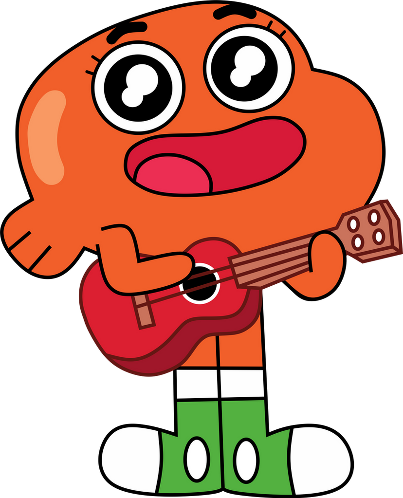
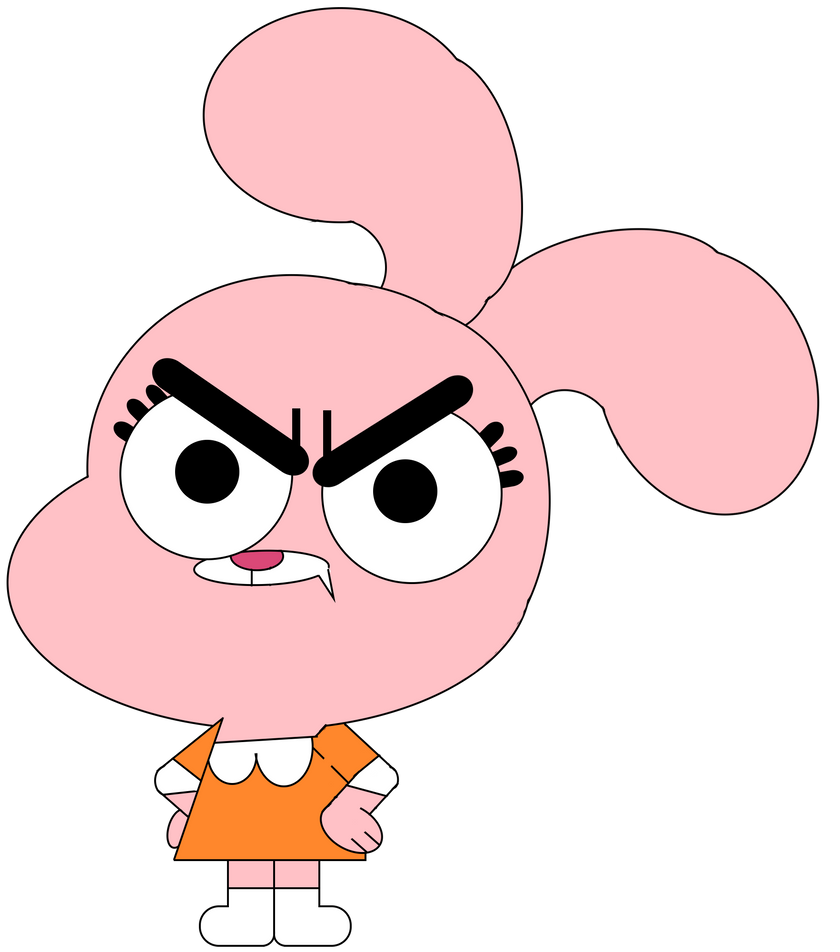

Gumball is a blue cat who is the main character of the Amazing World of Gumball animation series. He often gets into trouble and loves spending time with his best friend. Despite making numerous troubles, he would always try to help his friends and family.

Darwin Watterson
Darwin is an orange goldfish who has grown legs. He is Gumball's best friend and adopted brother. He is optimistic and kindhearted which often helps solve problems in the family. His dynamic with Gumball was so good that he appears in every episodes.

Anais Watterson
Anais is a small pink rabbit and is the youngest member of the family. She is extremely smart for her age which results in her frequently helping her older brothers with difficult circumstances. She often solves problems that Gumball and Darwin cannot figure out on their own.